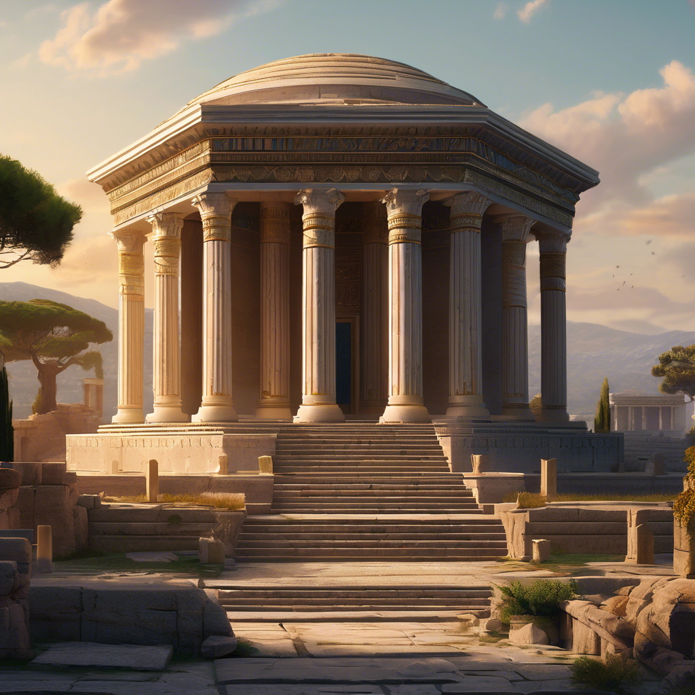

2 - Mausóleu de Halicarnasso

Ao longo da vida, o poderoso governante persa Mausolo construiu uma nova e magnífica capital para ele e sua esposa Artemísia em Halicarnasso (na costa oeste da atual Turquia), sem poupar gastos para enchê-la de belas estátuas e templos de mármore.